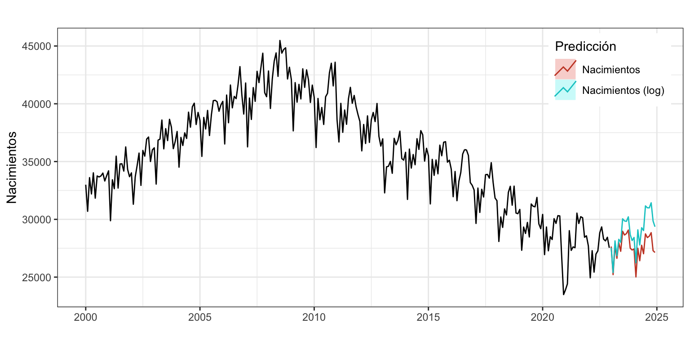
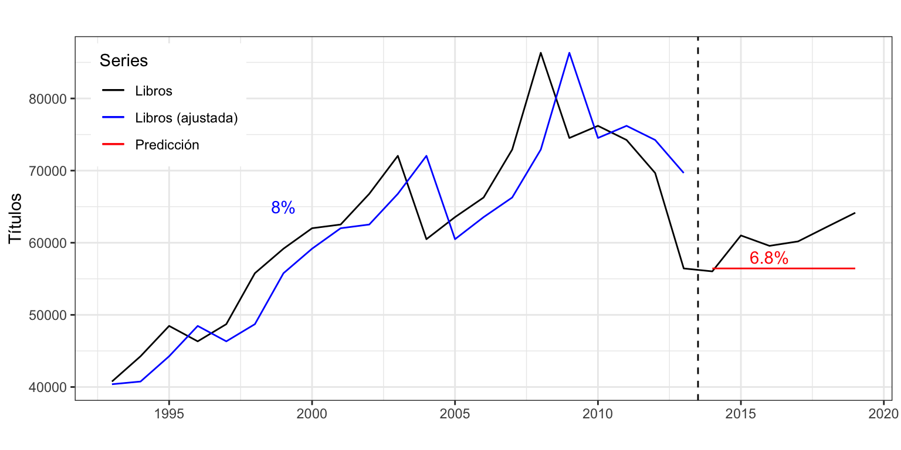
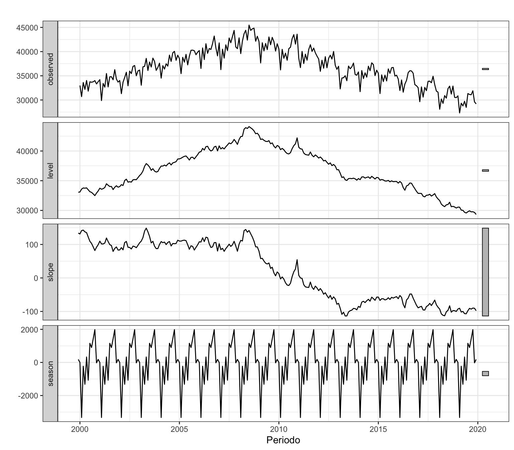
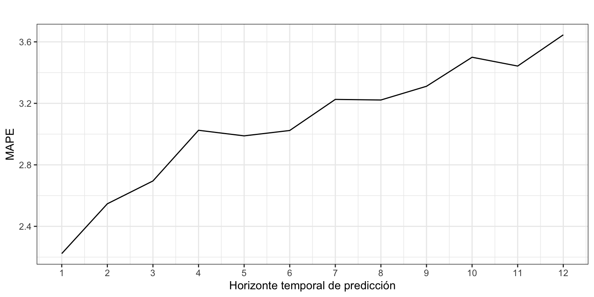

Iván Arribas (Depto. Análisis Económico. Universitat de València)
1 Introducción
Los métodos de alisado exponencial aparecen en los años 50 del siglo pasado de la mano de Brown, Holt y Winters (véase Brown 1959; Holt 2004; Winters 1960) y han sido la raíz de uno de los métodos de predicción más sencillos y eficaces. La idea básica es predecir usando una media ponderada de los datos pasados, donde los más recientes tienen un peso mayor y este decae exponencialmente conforme usamos observaciones más antiguas.
El alisado exponencial es una familia de métodos de ajuste y previsión que ofrece muy buenos resultados para predicciones a corto plazo o para predecir series con pocos datos o sencillas (sin mucho ruido).
Suponen un grado de modelización mayor que los métodos sencillos vistos previamente, pero sin alcanzar la complejidad de otras metodologías (modelos ARIMA).
En origen, son métodos descriptivos con el único objetivo de producir predicciones puntuales. Sin embargo, su enfoque como modelos de espacio de estados posibilita un marco teórico para obtener intervalos de confianza de las predicciones.
2 Componentes de una serie en el contexto del alisado exponencial
Para obtener una predicción en el periodo \(t+1\) con datos hasta el periodo \(t\) necesitamos tres componentes:
La estimación del nivel de la serie en el periodo \(t\): \(l_t\)
La estimación de la pendiente de la serie en el periodo \(t\): \(b_t\)
La estimación de la estacionalidad en el mes correspondiente al periodo \(t+1\) con datos hasta \(t\): \(s_{t + 1 - m}\) (recuerda, \(m\) es el orden estacional
A partir de estas componentes, obtenidas en el periodo \(t\) y para un esquema aditivo, se tendría que la predicción en el periodo \(t+1\) es:
\[\widehat{y}_{t+1} = l_t+b_t+s_{t+1-m}.\]
En general, las componentes pueden existir o no y se pueden combinar entre ellas aditiva o multiplicativamente. Veamos algunos casos:
Existen todas, nivel y pendiente aditivas, y estacionalidad multiplicativa:
\[\widehat{y}_{t+1}=(l_t+b_t)s_{t + 1 - m}\]
No hay pendiente y la estacionalidad es aditiva:
\[\widehat{y}_{t+1}=l_t+s_{t + 1 - m}\]
¿Como obtenemos los valores de \(l_t\), \(b_t\) y \(s_{t + 1 - m}\)? Mediante expresiones recursivas, donde cada componente se calcula a partir de los valores hasta \(t\) de la serie y de las componentes:
Por ejemplo, el método ingenuo I se puede interpretar dentro de este contexto como un método de alisado donde \(l_t = y_t\) y no hay ni pendiente ni estacionalidad. Por tanto, \(\widehat{y}_{t+1} = l_{t} = y_{t}\).
De la misma forma, el método ingenuo II se puede interpretar como un método de alisado donde \(l_t = y_t\), \(b_t = y_t - y_{t-1}\) y no hay estacionalidad. Entonces, \(\widehat{y}_{t+1}=l_t + b_t = y_t + (y_t - y_{t-1})\).
En las expresiones previas hemos supuesto que se quería obtener una predicción a un periodo vista (\(\widehat{y}_{t+1}\)). Si el objetivo es estimar una previsión \(h\) periodos hacia delante desde el periodo \(t\), \(\widehat{y}_{t+h}\), hay que modificar la ecuación de predicción adecuadamente. Por ejemplo, para el caso aditivo se tendría que
\[\widehat{y}_{t+h} = l_t+hb_t+s_{t+h-m(k+1)}\] donde \(k = \lfloor (h-1)/m\rfloor\).
El concepto de componentes aquí visto no coincide con el definido en el Tema 1. Sin embargo, podemos asimilar la tendencia de una serie como la suma (o multiplicación) del nivel y la pendiente \(T_{t+1} = l_t + b_t\) (o \(T_{t+1} = l_t \cdot b_t\)) y de esta forma ambas definiciones de componentes de una serie se hacen compatibles.
3 Casos posibles
Todas las series tiene nivel, pero dependiendo del tipo de pendiente y estacionalidad hay 15 casos posibles, mostrados en la Tabla 1.
Tabla 1: Casos de alisado según el tipo de tendencia y estacionalidad
Tendencia
Estacionalidad
Ninguna (N)
Aditiva (A)
Multiplicativa (M)
Ninguna (N)
N, N
N, A
N, M
Aditiva (A)
A, N
A, A
A, M
Aditiva Amortiguada (Ad)
Ad, N
Ad, A
Ad, M
Multiplicativa (M)
M, N
M, A
M, M
Multiplicativa Amortiguada (Md)
Md, N
Md, A
Md, M
Cada caso difiere en las componentes que se observan y su esquema, dando lugar a un conjunto diferente de ecuaciones recursivas de actualización.
Si se añade que el error puede ser aditivo (A) o multiplicativo (M), da 30 posibilidades. El tipo de error (aditivo o multiplicativo) es relevante en el cálculo del intervalo de confianza de las predicciones.
Los modelos más usuales son (error, tendencia, estacionalidad):
(A, N, N): Alisado exponencial simple
(A, A, N): Alisado de Holt
(A, Ad, N): Alisado con tendencia amortiguada (d de damped)
(A, A, A): Alisado de Holt-Winters aditivo
(M, A, M): Alisado de Holt-Winters multiplicativo
Acude al artículo de Hyndman and Khandakar (2008) para saber más de cada modelo, o al libro de Hyndman et al. (2008).
3.1 Las funciones ets y forecast
Podemos estimar cualquiera de los treinta modelos usando la función ets del paquete forecast.
El tipo de modelo en ets se especifica con el argumento model, un código de tres letras indicando el tipo de Error, Tendencia y eStacionalidad (ETS). Por ejemplo, model = "ANN" indica un modelo con error aditivo, sin tendencia ni estacionalidad, es decir, el alisado exponencial simple; model = "AAN" indica un modelo con error aditivo, pendiente aditiva, pero sin estacionalidad, el alisado exponencial de Holt. El alisado exponencial de Holt-Winters multiplicativo sería model = "AAM".
Si se desea incluir amortiguamiento, hay que añadir el argumento damped = TRUE.
Por defecto ets no considera modelos con tendencia multiplicativa (últimas dos líneas de la Tabla 1). Debes fijar el parámetro allow.multiplicative.trend=TRUE para contemplar esta opción.
A diferencia de las funciones vistas en el Tema 3 (naive, meanf, rwf y snaive), la función ets solo estima los modelos, pero no produce predicciones. Para ello habrá que usar la función forecast sobre un modelo estimado con ets. El principal argumento de esta función es h que especifica el horizonte temporal de predicción. También puedes usar level para fijar el nivel de confianza del intervalo de predicción.
Mira la ayuda de R para ver una explicación detallada de los argumentos de estas las funciones ets y forecast.
4 Alisado exponencial simple (A, N, N)
4.1 Definición
El alisado exponencial simple es adecuado para una serie estacionaria y sin estacionalidad. Es decir, una serie que se mueve alrededor de un nivel constante.
La ecuación de la predicción intramuestral es
\[\widehat{y}_{t+1} = \alpha y_t + \alpha (1-\alpha) y_{t-1} + \alpha (1-\alpha)^2 y_{t-2} + \alpha (1-\alpha)^3 y_{t-3} + \ldots = \alpha y_t + (1-\alpha)\widehat{y}_{t},\] donde \(0 \leq \alpha \leq 1\) es el parámetro de suavizado. La primera predicción extramuestral queda
\[\widehat{y}_{T+1}=\alpha y_T + (1-\alpha)\widehat{y}_{T}\] y para las restantes
\[\widehat{y}_{T+h} = \widehat{y}_{T+1}.\]
4.2 Formulas interactivas de sus componentes
En el alisado exponencial simple solo hay una componente, el nivel \(l_t\).
La ecuación recursiva de suavizado es \(l_t=\alpha y_t + (1-\alpha)l_{t-1}\)
La ecuación de predicción intramuestral es \(\widehat{y}_{t+1} = l_t\)
La ecuación de predicción extramuestral es \(\widehat{y}_{T+h} = \widehat{y}_{T+1} = l_T\)
Dos estimaciones razonables de \(l_t\), el nivel de la serie en el periodo \(t\), son el valor observado para la serie en ese periodo \(y_t\) y el nivel del periodo previo \(l_{t-1}\). La estimación final de \(l_t\) es una media ponderada de ambas y esta estimación final es la previsión de la serie para el periodo siguiente.
4.3 Estimación de los parámetros del modelo
Dado el proceso iterativo para el cálculo de \(l_t\) se necesita un valor inicial de arranque \(l_0\). Cada programa estadístico usa su propio método para obtener \(l_0\).
Respecto de \(\alpha\), usualmente se estima el valor optimo según un criterio de precisión de la predicción. El parámetro \(\alpha\)se puede interpretar:
Si \(\alpha = 1\) se tiene el método ingenuo I (\(\widehat{y}_{t+1}=y_t\)), óptimo cuando el nivel de la serie varía constantemente en el tiempo.
Si \(\alpha = 0\) se tiene \(\widehat{y}_{t} =l_0\), óptimo cuando el nivel permanece constante en el tiempo.
En concreto, ets estima por defecto los parámetros \(\alpha\) y \(l_0\) maximizando la función de verosimilitud. Esta búsqueda está restringida a \(0 < \alpha < 1\). Es decir el parámetro \(\alpha\) nunca puede ser 0 o 1 y en la práctica sus valores limite son 0.0001 y 0.9999.
4.4 Ejemplo
Vamos a usar el método de alisado exponencial simple para predecir la serie Demanda eléctrica semanal desde la primera semana de febrero (semana 6 del año) hasta la última semana completa de mayo (semana 22 del año), en total 17 semanas. Usaremos para ello la función ets con `model = “ANN”.
electricidad <-read.csv2("./series/Consumo electrico.csv", header =TRUE)electricidad <-ts(electricidad[, 1],start =c(1, 6),frequency =7)#Nos quedamos con los meses de febrero a mayo.electricidad <-window(electricidad, start =c(6, 1), end =c(22, 7)) #Creamos la serie de consumo semanalelectricidadSemanal <-aggregate(electricidad, FUN = sum) electricidadEts <-ets(electricidadSemanal, model ="ANN")summary(electricidadEts)
ETS(A,N,N)
Call:
ets(y = electricidadSemanal, model = "ANN")
Smoothing parameters:
alpha = 0.5912
Initial states:
l = 5101.1606
sigma: 175.1913
AIC AICc BIC
227.6767 229.5229 230.1764
Training set error measures:
ME RMSE MAE MPE MAPE MASE ACF1
Training set -44.6217 164.5636 99.49524 -1.008795 2.167762 0.8915993 -0.1809408
Veamos la salida en detalle:
El valor de \(\alpha\) que optimiza el criterio usado para medir la calidad del ajuste es \(\alpha =\) 0.59, un valor intermedio, ni cercano a 0 ni cercano a 1. Es decir, la serie Demanda eléctrica cambia de nivel poco a poco.
El valor de arranque \(l_0\) óptimo es 5101.16.
sigma es la desviación típica del error (aditivo) de predicción. Se diferencia de RMSE en el denominador. Para calcular sigma en lugar de dividir por \(T\) se divide por \(T\) menos el número de parámetros estimados, en este caso 3: \(l_0\), \(\alpha\) y sigma. Sí, sigma, se considerará siempre otro parámetro estimado.
La calidad del ajuste es bueno, como evidencia el error porcentual medio del 2.2%.
En el objeto electricidadEts la matriz electricidadEts$states guarda todos los valores del nivel obtenidos con la ecuación recursiva, incluido el valor de arranque, así que es una matriz con \(T+1\) filas (18 en el ejemplo). Puedes ver el valor de \(l_{22}\) de la última semana completa de mayo de 2022 (semana 22 del año) en su última fila, que vale 4652.69.
tail(electricidadEts$states, 1)
Time Series:
Start = 22
End = 22
Frequency = 1
l
[1,] 4652.686
Así, la predicción para la primera semana de junio es \(\widehat{y}_{23}=l_{22}=\) 4652.69. Igualmente \(\widehat{y}_{24}=l_{22}=\) 4652.69. Es decir, todas las previsiones son iguales a \(l_{22}\).
Mediante la función forecast podemos predecir los casos de Demanda eléctrica para las próximas 5 semanas. Por tratarse de un modelo sin pendiente ni estacionalidad, la predicción es constante en el tiempo. Recuerda que \(\widehat{y}_{T+h} = l_T\).
Point Forecast Lo 95 Hi 95
23 4652.686 4309.317 4996.055
24 4652.686 4253.797 5051.575
25 4652.686 4205.112 5100.261
26 4652.686 4161.226 5144.146
27 4652.686 4120.949 5184.423
La Figura 1 muestra la serie Demanda eléctrica, las previsiones extramuestrales que son constantes y el intervalo de confianza. Conforme aumentamos el horizonte de predicción, el intervalo de confianza es más amplio como reflejo de la mayor incertidumbre en la predicción.
La ecuación de la predicción intramuestral a un periodo vista es
\[\widehat{y}_{t+1} = l_t + b_t,\] de forma que la ecuación de predicción extramuestral es \[\widehat{y}_{T+h}=l_T + h b_T.\]
Dos estimaciones razonables del nivel de la serie en el periodo \(t\) son el valor observado para la serie en ese periodo \(y_t\), y una estimación del nivel del periodo \(t\) realizada desde el periodo \(t-1\): \(l_{t-1} + b_{t-1}\). Por otro lado, dos estimaciones razonables de la pendiente de la serie en el periodo \(t\) son el cambio de nivel de \(t-1\) a \(t\) (el último observado) \(l_t-l_{t-1}\), y el valor de la pendiente en el periodo previo, \(b_{t-1}\). En ambos casos, nivel y pendiente, la estimación final es una media ponderada, parametrizada por \(0 \leq \alpha, \: \beta \leq 1\).
Observa que el método ingenuo II es un caso concreto de Alisado de Holt. Si hacemos \(\alpha=\beta = 1,\) queda \(l_t=y_t\) y \(b_t=y_t-y_{t-1}\), por tanto
Para aplicar este método es necesario estimar unos valores iniciales \(l_0\) y \(b_0\) de las ecuaciones recursivas e identificar los valores más adecuados de los parámetros \(\alpha\) y \(\beta\).
La función ets estima por defecto los parámetros \(\alpha\), \(\beta\), \(l_0\) y \(b_0\) maximizando la función de verosimilitud. En este caso la búsqueda está restringida a \(0 < \beta < \alpha < 1\). Por tanto, \(\alpha\) y \(\beta\) nunca pueden ser 0 o 1 y en la práctica sus valores limite son 0.0001 y 0.9999.
La interpretación del parámetro \(\alpha\) es similar al caso del alisado exponencial simple.
Interpretación del parámetro\(\beta\):
Si \(\beta = 1\), \(b_t = l_t - l_{t-1}\), la pendiente se actualiza constantemente porque varía periodo a periodo Puede ser un indicador de mal ajuste (tendencia no lineal o pendiente no aditiva).
Si \(\beta = 0\), \(b_t = b_{t-1}= \ldots = b_0\), la pendiente se mantiene constante en el tiempo.
5.3 Ejemplo
Vamos a usar el método de alisado de Holt para predecir la serie Libros. Usaremos para ello la función ets con los argumentos model = "AAN" y damped = FALSE. El segundo argumento previene el uso de tendencia amortiguada que veremos en el siguiente epígrafe.
libros <-read.csv2("./series/libros.csv", header =TRUE)libros <-ts(libros[, 2], start =1993, frequency =1)librosEts <-ets(libros, model ="AAN",damped =FALSE)summary(librosEts)
ETS(A,A,N)
Call:
ets(y = libros, model = "AAN", damped = FALSE)
Smoothing parameters:
alpha = 0.9461
beta = 0.0001
Initial states:
l = 43015.3558
b = 866.6661
sigma: 6235.705
AIC AICc BIC
566.5129 569.3700 572.9921
Training set error measures:
ME RMSE MAE MPE MAPE MASE
Training set -91.75606 5755.295 4179.61 -0.3817069 6.68946 0.9237963
ACF1
Training set 0.004201274
Los valores óptimos de los cuatro parámetros son \(\alpha=\) 0.95, \(\beta=\) 0, \(l_0 =\) 43015.36 y \(b_0 =\) 866.67. Observa que \(\alpha\) es prácticamente 1 y que \(\beta\) es cero. Si aplicamos estos valores de los parámetros a las ecuaciones recursivas y la predicción extramuestral, obtenemos \(y_{T+h}=y_T + hb_0\): la predicción es el último valor observado más \(h\) veces la primera pendiente estimada. La calidad de las predicciones es razonable, con un error porcentual medio del 6.7%.
Parámetros estimados
¿Cuántos parámetros se han estimado (y la respuesta no es 4)? ¿Cuál es el denominador en el cálculo de RMSE y de sigma?
En el objeto librosEts la matriz librosEts$states guarda todos los valores obtenidos con las ecuaciones recursivas, en este caso el nivel y la pendiente, incluidos los valores de arranque. Puedes ver los valores de \(l_{2019}\) y \(b_{2019}\) en su última fila, que valen respectivamente 64091.02, 866.42.
tail(librosEts$states, 1)
Time Series:
Start = 2019
End = 2019
Frequency = 1
l b
2019 64091.02 866.4181
Así, la predicción para \(2020\) es \(\widehat{y}_{2020}=l_{2019} + b_{2019}=\) 64091.02 \(+\) 866.42 \(=\) 64957.43. Igualmente \(\widehat{y}_{2021}=l_{2019} + 2\cdot b_{2019}=\) 65823.85. Es decir, el incremento entre previsiones es constante e igual a \(b_{2019}\) que, por ser \(\beta\) prácticamente nulo, coincide con \(b_0\).
6 Alisado exponencial con pendiente amortiguada (A, Ad, N)
Las previsiones con el método de Holt presentan siempre una pendiente constante. En previsiones a corto plazo esto no es un problema, pero para previsiones a largo plazo la experiencia indica que suele aparecer un sesgo de previsión. El alisado exponencial con pendiente amortiguada trata de corregir esta limitación. El mecanismo, propuesto por Gardner and Mckenzie (1985), es introducir un nuevo parámetro \(0 \leq \phi \leq 1\) que amortigua la tendencia hasta hacerla plana en el largo plazo.
La ecuación de la predicción intramuestral a un periodo vista es \[\widehat{y}_{t+1} = l_t + \phi b_t,\] de forma que la ecuación de predicción extramuestral es \[\widehat{y}_{T+h}=l_T + (\phi + \phi^2 + \ldots + \phi^h) b_T.\]
Como observas, se ha añadido un nuevo parámetro \(\phi\), que acompaña siempre a la pendiente \(b_t\). Si \(\phi = 1\), se tiene el alisado de Holt y si \(\phi = 0\), se tiene el alisado simple. Para valores entre \(0\) y \(1\) en el corto plazo las predicciones tienen pendiente y en el largo plazo se hacen constantes e iguales a \(l_T + \phi b_T/(1 - \phi)\).
Por razones prácticas el rango de búsqueda de \(\phi\) queda en el intervalo \([0.8, 0.98]\). Si el valor óptimo de \(\phi\) fuera su valor máximo de \(0.98\) o muy cercano a este valor, cabría plantearse si no sería más adecuado un modelo sin amortiguamiento.
6.2 Ejemplo
Vamos a usar el método de alisado con amortiguamiento para predecir, una vez más, la serie Libros añadiendo a la función ets el argumento damped = TRUE. En este caso, para ver el efecto del amortiguamiento vamos a pedir un horizonte temporal más largo.
librosEtsD <-ets(libros, model ="AAN", damped =TRUE)summary(librosEtsD)
ETS(A,Ad,N)
Call:
ets(y = libros, model = "AAN", damped = TRUE)
Smoothing parameters:
alpha = 0.8971
beta = 0.0001
phi = 0.9083
Initial states:
l = 41396.6242
b = 2881.012
sigma: 6239.024
AIC AICc BIC
567.3414 571.5414 575.1164
Training set error measures:
ME RMSE MAE MPE MAPE MASE
Training set -159.4816 5631.786 3984.248 -0.6273468 6.314471 0.8806165
ACF1
Training set 0.01091024
El valor óptimo del parámetro \(\phi\) es \(0.91\) y el error porcentual 6.3%, algo inferior al obtenido con el alisado de Holt sin amortiguamiento. La inclusión de un nuevo parámetro en el modelo mejora el ajuste.
Parámetros estimados
¿Cuántos parámetros se han estimado en este caso? ¿Cuáles?
La Figura 3 muestra la serie Libros, su estimación (intramuestral) y las predicciones a 15 años vista. Observa que la pendiente de las previsiones se amortigua en el tiempo, de forma que al principio las previsiones crecen más rápidamente que en los últimos años.
librosfD <-forecast(librosEtsD, h =15,level =95)librosfD
Figura 3: Libros y predicción con alisado exponencial con amortiguamiento
7 Alisado de Holt-Winters aditivo (A, A, A) y multiplicativo (M, A, M)
El método de alisado exponencial de Holt-Winters es adecuado para una serie con tendencia y estacionalidad. Existen dos versiones según que el esquema sea aditivo o multiplicativo.
La ecuación de la predicción intramuestral a un periodo vista es \[\widehat{y}_{t+1} = l_t + b_t + s_{t+1-m},\] de forma que la ecuación de predicción extramuestral es: \[\widehat{y}_{T+h}=l_T + h b_T + s_{T+h - m(k+1)},\] con \(k = \lfloor(h-1)/m\rfloor\).
7.2 Alisado de Holt-Winters multiplicativo (M, A, M)
La ecuación de la predicción intramuestral a un periodo vista es \[\widehat{y}_{t+1} = (l_t + b_t)s_{t+1-m},\] de forma que la ecuación de predicción extramuestral es: \[\widehat{y}_{T+h}=(l_T + h b_T)s_{T+h - m(k+1)}.\]
7.3 Ejemplo con Demanda electrica
Vamos a usar el método de Holt-Winters Aditivo para predecir la serie Demanda eléctrica, que presentaba un esquema aditivo. Para ello usaremos la función ets con el argumento model = "AAA" (y damped = FALSE). Vamos a considerar la serie desde el 31 de enero (lunes) hasta el 29 de mayo (domingo), 17 semanas, y pedir una previsión a dos semanas vista.
En el proceso de estimación, el parámetro \(\gamma\) que gobierna la componente estacional está restringido a \(0 < \gamma < 1 - \alpha\).
electricidad <-read.csv2("./series/Consumo electrico.csv", header =TRUE)electricidad <-ts(electricidad[, 1],start =c(1, 6),frequency =7)#Nos quedamos con los meses de febrero a mayo.electricidad <-window(electricidad, start =c(6, 1), end =c(22, 7)) electricidadEts <-ets(electricidad, model ="AAA", damped =FALSE)summary(electricidadEts)
ETS(A,A,A)
Call:
ets(y = electricidad, model = "AAA", damped = FALSE)
Smoothing parameters:
alpha = 0.9995
beta = 0.0001
gamma = 0.0001
Initial states:
l = 744.5107
b = -0.4279
s = -90.7869 -45.8445 24.1349 31.8978 36.7843 33.9753
9.8391
sigma: 19.3728
AIC AICc BIC
1286.574 1289.518 1319.924
Training set error measures:
ME RMSE MAE MPE MAPE MASE
Training set -0.1920454 18.45569 11.78346 -0.06782005 1.802602 0.4649929
ACF1
Training set 0.04506439
Los valores óptimos de los parámetros son \(\alpha=\) 1, \(\beta=\) 0 y \(\gamma=\) 0. Los valores nulos para \(\beta\) y \(\gamma\) indican que ambas, la pendiente y la estacionalidad, permanecen constantes en el tiempo. La calidad de las predicciones es notable, con un error porcentual medio del 1.8%.
l b s1 s2 s3 s4 s5 s6 s7
670.293 -0.430 -90.791 -45.840 24.135 31.896 36.785 33.972 9.841
Como el último dato de la serie es domingo 29 de mayo, los valores del nivel \(l\) y la pendiente \(b\) mostrados corresponden a ese día. Sin embargo, la componente estacional tiene un orden muy peculiar: s1 es el valor estacional para domingo (día del último dato), s2 el de sábado, s3 de viernes, hasta s7 que sería lunes. Podemos reproducir las predicciones para los próximos 7 días, 30 de mayo a 5 de junio (ojo, el etiquetado de la salida no tiene sentido):
Figura 4: Demanda eléctrica y predicción con alisado de Holt-Winters aditivo
7.4 Ejemplo con Nacimientos
Vamos a usar el método de Holt-Winters multiplicativo para predecir la serie Nacimientos, que presentaba un esquema multiplicativo. En este caso usaremos el argumento model = "MAM"1. Vamos a considerar la serie Nacimientos desde enero de 2000 y pedir una previsión a dos años vista.
ETS(M,A,M)
Call:
ets(y = nacimientosb, model = "MAM", damped = FALSE)
Smoothing parameters:
alpha = 0.5267
beta = 0.0322
gamma = 0.0474
Initial states:
l = 33033.5584
b = 132.3618
s = 0.9949 0.9946 1.0457 1.0364 1.0274 1.0425
0.9816 1.0158 0.9621 0.995 0.9072 0.9966
sigma: 0.028
AIC AICc BIC
5374.038 5376.410 5435.585
Training set error measures:
ME RMSE MAE MPE MAPE MASE
Training set -15.26284 901.2576 684.0782 -0.08154216 1.974927 0.4907011
ACF1
Training set 0.05530167
Los valores óptimos de los parámetros son \(\alpha=\) 0.53, \(\beta=\) 0.03 y \(\gamma=\) 0.05. Los valores tan bajos para \(\beta\) y \(\gamma\) indican que ambas, la pendiente y la estacionalidad, modifican su valor muy lentamente. La calidad de las predicciones es notable, con un error porcentual medio del 2.0%.
Como el último dato de la serie es diciembre de 2022, los valores del nivel \(l\) y la pendiente \(b\) mostrados corresponden a ese mes. Sin embargo, recuerda que la componente estacional sigue un orden inverso: s1 es el valor estacional para diciembre (mes del último dato), s2 el de noviembre, s3 de octubre, hasta s11 que sería febrero y s12 que es enero.
Podemos reproducir las predicciones para los primeros 12 meses de enero a diciembre (ojo, el etiquetado de la salida no es correcto) para ver que coinciden con las obtenidas con la función forecast.
Figura 5: Nacimientos y predicción con alisado de Holt-Winters multiplicativo
8 Ejemplo con transformación logarítmica
Una alternativa para predecir la serie Nacimientos, que tiene esquema multiplicativo, es predecir la transformación logarítmica de la serie, que tendrá un esquema aditivo. Después, se aplica la transformación inversa y se obtienen las predicciones de la serie original.
Este proceso se puede realizar de forma sencilla y transparente con cualquiera de las funciones de que hemos visto a partir de los argumentos lambda y biasadj.
lambda = 0 indica que se ha de realizar la transformación logarítmica de la serie previamente a su modelización. Es un parámetro de la transformación Box-Cox que comentaremos en el tema 6.
biasadj = TRUE es necesario si tras una transformación de la serie original queremos que las predicciones sean insesgadas. Sea \(y_t\) la serie original y \(z_t=log(y_t)\) su transformación logarítmica. Si obtenemos una predicción \(\widehat{y}_t\) de la serie original, esta será insesgada \(E[\widehat{y}_t]=y_t\). Ahora bien, si obtenemos una predicción \(\widehat{z}_t\) de la serie transformada, podemos pensar que \(e^{\widehat{z}_t}\) es una predicción insesgada de la serie original, pero resulta que \(E[e^{\widehat{z}_t}] \neq y_t\). Es decir, la exponencial de la predicción de la serie con transformada logarítmica no es insesgada. Si el argumento biasadj es fijado a FALSE, las predicciones se calcularán de forma directa deshaciendo la transformación y serán sesgadas; si es fijado a TRUE, las predicciones se calcularán por medio de una fórmula alternativa y serán insesgadas. En ambos casos las estimaciones son consistentes, así que para series largas no debería observarse mucha diferencia entre las dos alternativas. Sin entrar en detalles matemáticos, cuanto menor es sigma menor será el sesgo en las predicciones.
Vamos a practicar el uso de estos argumentos con la serie Nacimientos. Como se va a predecir el logaritmo de la serie, se debe indicar a la función etsmodel = "AAA" que estima el modelo Holt-Winters aditivo. Además, vamos a pedir que las predicciones sean insesgadas con biasadj = TRUE.
nacimientosbEtsl <-ets(nacimientosb, model ="AAA",damped =FALSE,lambda =0, biasadj =TRUE)summary(nacimientosbEtsl)
ETS(A,A,A)
Call:
ets(y = nacimientosb, model = "AAA", damped = FALSE, lambda = 0,
Call:
biasadj = TRUE)
Box-Cox transformation: lambda= 0
Smoothing parameters:
alpha = 0.4194
beta = 0.0677
gamma = 0.1403
Initial states:
l = 10.4564
b = 0.0015
s = -0.0135 0.0076 0.0343 0.033 0.0198 0.0408
-0.0297 0.0236 -0.0283 0.0123 -0.0965 -0.0035
sigma: 0.0297
AIC AICc BIC
-371.8794 -369.5073 -310.3326
Training set error measures:
ME RMSE MAE MPE MAPE MASE
Training set -14.18804 953.356 727.8843 -0.08137768 2.097494 0.5221239
ACF1
Training set 0.1264407
Point Forecast Lo 95 Hi 95
Jan 2023 27537.54 25967.36 29176.87
Feb 2023 25398.85 23791.89 27084.73
Mar 2023 28139.29 26155.46 30232.29
Apr 2023 26852.85 24742.41 29093.59
May 2023 28272.77 25800.76 30915.77
Jun 2023 28014.35 25299.00 30939.52
Jul 2023 30046.70 26832.06 33537.77
Aug 2023 29861.34 26351.23 33705.97
Sep 2023 29826.07 25992.10 34063.26
Oct 2023 30216.58 25988.40 34933.47
Nov 2023 28672.66 24324.23 33571.27
Dec 2023 28164.81 23554.48 33411.28
Jan 2024 28432.04 23348.26 34292.19
Feb 2024 26240.59 21225.47 32083.31
Mar 2024 29091.76 23166.53 36070.78
Apr 2024 27782.11 21769.07 34944.80
May 2024 29273.96 22559.12 37365.74
Jun 2024 29030.36 21991.05 37614.40
Jul 2024 31163.60 23194.50 41000.23
Aug 2024 30999.82 22658.71 41424.34
Sep 2024 30993.08 22237.05 42075.91
Oct 2024 31430.61 22125.95 43361.33
Nov 2024 29856.14 20612.10 41866.62
Dec 2024 29359.59 19869.31 41856.89
Observa que en este caso la calidad de las predicciones (MAPE = 2.1%) es algo superior a la obtenida con la serie sin transformar.
La Figura 6 muestra la serie Nacimientos y las previsiones extramuestrales obtenidas con y sin la transformación logarítmica.

Figura 6: Nacimientos y dos predicciones con alisado de Holt-Winters
La Tabla 2 muestra las predicciones de Nacimientos obtenidas sin transformar la serie, con transformación logarítmica y predicciones insesgadas (biasadj = TRUE), y con transformación logarítmica y predicciones sesgadas (biasadj = FALSE).
Tabla 2: Diferencias en la predicción según transformación logarítmica y corrección por sesgo
Sin transformar
log(Nac) insesgadas
log(Nac) sesgadas
27649.64
27537.54
27525.38
25216.01
25398.85
25384.97
27712.05
28139.29
28120.09
26626.41
26852.85
26829.94
27976.30
28272.77
28242.70
27235.50
28014.35
27977.47
28968.53
30046.70
29998.12
28643.58
29861.34
29802.58
28768.20
29826.07
29755.26
29074.70
30216.58
30130.80
27505.07
28672.66
28576.13
27347.00
28164.81
28053.26
Observa que las predicciones sesgadas son menores que las insesgadas. Esto siempre es así. La diferencia depende fundamentalmente de la desviación típica del error, sigma en la salida de los métodos de alisado exponencial. Cuanto mayor es sigma, mayores son las diferencias.
Por otro lado, las predicciones obtenidas sin y con la transformación logarítmica no guardan ninguna relación.
Ni la transformación logarítmica ni el uso de predicciones insesgadas aseguran mejores predicciones respecto de otras opciones, como puede ser trabajar con predicciones sesgadas o no realizar la transformación logarítmica.
9 Casos generales de alisado exponencial: la función ets (de nuevo)
En los epígrafes previos hemos visto cinco de los casos expuestos en la taxonomía de la Tabla 1, fijados a partir de los argumentos model y damped de la función ets. Veamos ahora como estimar cualquiera de los treinta modelos que surgen según las diferentes posibilidades de la tendencia (N, A, Ad, M y Md), la estacionalidad (N, A y M) y el error (A, M).
Recordemos que el tipo de error no influye en el cálculo de las previsiones, solo influye en el cálculo del intervalo de confianza de estas.
Podemos estimar cualquiera de los treinta modelos usando la función ets del paquete forecast.
Lo más habitual es no saber cual es el mejor modelo, entendiendo como tal, el que mejor se ajusta a la serie temporal. De hecho, si lo que buscamos es predecir bien, el mejor modelo será el que mejor prediga.
Si en una de las tres letras del código del modelo se indica “Z”, la función ets selecciona de entre los modelos posibles el que mejor se ajusta. Por ejemplo, model = "AAZ" indica un modelo con error y pendiente aditivos y dejaría a ets la búsqueda de la mejor opción para la estacionalidad (aditiva o multiplicativa). Si se especifica model = "ZZZ junto con damped = NULL (opciones por defecto) se dejaría a la función total libertad para buscar entre todos los modelos (excepto aquellos con pendiente multiplicativa). Si se desea restringir la búsqueda a modelos sin amortiguamiento basta indicar damped = FALSE y si se desea restringir la búsqueda solo a modelos aditivos se puede usar el argumento additive.only = TRUE.
9.1 Criterios de optimización
Fijado un modelo, ets estima por defecto sus parámetros maximizando la función de verosimilitud. Esta búsqueda esta restringida a \(0 < \beta < \alpha < 1\), \(0 < \gamma < 1 - \alpha\) y \(0.8 < \phi < 0.98\). Es decir, los tres primeros parámetros nunca pueden ser 0 o 1, y en la práctica sus valores límite son 0.0001 y 0.9999.
Puedes cambiar el criterio de optimización con el argumento opt.crit. Por defecto vale “lik” (de likelihood o verosimilitud), pero si lo fijas a opt.crit = "mse" se estiman los parámetros que minimizan el error cuadrático medio. Otra opción interesante es opt.crit = "amse" que minimiza la media de los errores cuadráticos medios obtenido sobre las previsiones hasta nmse periodos vista. En este caso usa el argumento nmse para fijar el valor numérico del horizonte temporal.
9.2 Criterios de selección de modelos
Queda pendiente saber que criterio se usa para seleccionar el modelo cuando se ofrece esta opción. Esto se hace a partir de un criterio de información entre Akaike (aic), Akaike corregido para pequeñas muestras (aicc) y el Bayesiano (bic). Sus fórmulas son: \[aic = -2log(L) + 2k\]\[aicc = aic + \frac{k(k+1)}{T-k-1}\]\[bic=aic + k(log(T) - 2)\] donde \(L\) es la verosimilitud, \(T\) el número de datos y \(k\) el de parámetros estimados (incluidos los puntos iniciales de arranque y la desviación típica del error).
Cuanto menor es el criterio de información, mejor modelo. Por defecto se usa Akaike corregido para pequeñas muestras (aicc), pero el argumento ic permite cambiar de criterio.
Una reflexión sobre los métodos automáticos de selección de modelos
Con el comando forecast(ets(nacimientos),h=24) obtenemos una predicción mensual a dos años vista del número de nacimientos en España. Así de simple, solo 31 caracteres. Todo esto gracias a que un algoritmo interno ha estimado los parámetros de múltiples modelos, elegido el mejor modelo de todos y lo ha usado para obtener las predicciones. Podemos afirmar que tenemos las mejores predicciones. Un momento, ¿podemos?
Parémonos a reflexionar sobre lo que hemos hecho o, más bien, lo que el algoritmo ha hecho y a contrastarlo con lo que nosotros queríamos. Por un lado, el algoritmo estima los parámetros de un menú fijo de modelos y para ello usa un criterio de optimización, que por defecto es maximizar la función de verosimilitud; cuando ya tiene estimados todos los modelos, elije el mejor usando el criterio de información de Akaike corregido para muestras pequeñas; y finalmente, nosotros medimos la capacidad predictiva del modelo seleccionado usando el error absoluto porcentual medio. Vaya, resulta que en los procesos de identificación y estimación del mejor modelo se usan dos criterios diferentes, que además no coinciden con nuestro criterio de calidad de las predicciones.
Si consideramos que la calidad de un modelo viene dada por el error absoluto porcentual medio en las predicciones intramuestrales a un periodo vista (lo que hemos decidido llamar MAPE), ¿no deberíamos estimar los parámetros del modelo usando como criterio la minimización del MAPE?, ¿no deberíamos elegir entre varios modelos aquel que presenta un MAPE menor? De esta forma, en todos los pasos del proceso se usa el mismo criterio, que es, además, el criterio que hemos considerado adecuado para valorar la calidad de las predicciones.
Pero no es esto lo que hacemos.
Nada nos garantiza que el modelo estimado y seleccionado por el algoritmo estime las mejores predicciones posibles. Y por mejores quiero decir que de entre todos los posibles modelos del menú y todos los posibles valores de sus parámetros, el seleccionado sea el que minimiza nuestro criterio de calidad de las predicciones.
Ahora ya podemos dar respuesta a la pregunta del primer párrafo: no, no podemos afirmar que nuestras predicciones sean las mejores.
Alguien dirá que casi seguro entre las predicciones subóptimas obtenidas por el algoritmo con su extraña mezcla de criterios y las predicciones óptimas de verdad no habrá mucha diferencia. Total, que más da una función de verosimilitud que un criterio de información que una medida del error medio. Pero lo cierto es que no lo sabemos, no tenemos ni idea de la distancia que hay entre lo óptimo y lo sub-óptimo, y si el coste de equivocarme en las predicciones es alto, puede que incluso una pequeña diferencia sea relevante.
Esta reflexión realizada en el contexto de series temporales y para la función ets es aplicable a todos los casos donde dejamos que un algoritmo ya programado elija el mejor modelo, y se basa en el hecho de que rara vez los criterios de estimación y elección que usan los algoritmos coinciden con el concepto de calidad de ajuste que estamos interesados.
A pesar de lo aquí expuesto, como es más cómodo (y rápido) tirar de rutinas ya programadas que escribir nuestro propio código, seguiremos trabajando con modelos subóptimos y obteniendo estimaciones subóptimas, pero diciendo que son las mejores.
10 Residuo de un modelo
Todo modelo estimado con una función de R tiene asociado un residuo que podemos extraer con la función residuals. En los modelos más sencillos este error se define de la forma usual, \(\widehat{\varepsilon}_t = y_t - \widehat{y}_t\), pero no siempre es así. Veamos algunas excepciones y como proceder.
Residuo aditivo versus residuo multiplicativo
En los modelos de alisado estimados por la función ets la fórmula para el cálculo del residuo estimado depende de su naturaleza aditiva o multiplicativa.
Si el residuo es aditivo, entonces el modelo es \(y_t = \widehat{y}_t + \widehat{\varepsilon}_t\) y el residuo se define de la forma usual \[\widehat{\varepsilon}_t = y_t - \widehat{y}_t.\]
Ahora bien, si el residuo es multiplicativo, entonces el modelo es \(y_t = \widehat{y}_t \cdot (1 + \widehat{\varepsilon}_t)\), y no \(y_t = \widehat{y}_t \cdot \widehat{\varepsilon}_t\) como se podría esperar. Por tanto, el residuo multiplicativo se define como \[\widehat{\varepsilon}_t = (y_t - \widehat{y}_t)/\widehat{y}_t.\]
De esta forma en ambos casos –aditivo y multiplicativo– el residuo evoluciona alrededor del valor 0 y se le pueden imponer las hipótesis usuales de ruido blanco. Observa que el error multiplicativo tampoco es el error porcentual tal y como se define para el calculo del MPE o del MAPE.
Si hemos estimado con la función ets un modelo con residuo multiplicativo y extraemos el residuo con la función residuals se usará la fórmula previamente indicada. Si se desea obtener el residuo aditivo, se debe usar la función residuals con el argumento type = "response".
Residuo de un modelo logarítmico
Si tenemos una serie \(y_t\), pero el modelo se ha obtenido sobre su transformación logarítmica \(z_t = \log(y_t)\), el residuo (que siempre será aditivo) que obtendremos por defecto es \[\widehat{\varepsilon}_t = z_t - \widehat{z}_t.\]
Si se desea obtener el error sobre la serie original, es decir \(\widehat{\varepsilon}_t = y_t - \widehat{y}_t\), de nuevo hay que usar la función residuals con el argumento type = "response".
11 Ejemplos de aplicación
11.1 Libros
Identificación y estimación del mejor modelo
Si estimamos el mejor modelo de alisado exponencial para la serie Libros sin ningún tipo de restricción, nos encontramos:
librosEts <-ets(libros)summary(librosEts)
ETS(M,N,N)
Call:
ets(y = libros)
Smoothing parameters:
alpha = 0.9999
Initial states:
l = 40459.0122
sigma: 0.0902
AIC AICc BIC
557.0738 558.1173 560.9613
Training set error measures:
ME RMSE MAE MPE MAPE MASE ACF1
Training set 877.6729 5798.394 4367.896 1.318359 6.900756 0.9654123 -0.03788908
El modelo estimado es ETS(M,N,N) o “MNN”, un modelo sin pendiente ni estacionalidad y con error multiplicativo. Es decir, \(y_{t+1} = l_t \cdot (1 + \varepsilon_{t+1})\).
El valor de \(\alpha\) técnicamente es 1, indicando que el nivel de la serie varia en el tiempo y que realmente estamos usando para las previsiones el método ingenuo I.
Respecto de la calidad del modelo, el valor de MAPE= \(6.9\)% evidencia que estamos ante un modelo que se ajusta moderadamente bien a los datos. MASE= \(0.97\) indica que el modelo de alisado exponencial simple reduce en solo un \(3\)% el error del método ingenuo I. Además, el modelo estimado presenta un marcado sesgo positivo, las predicciones en promedio son menores que los valores reales.
Predicción
Mediante la función forecast podemos predecir los casos de Libros. Por tratarse de un modelo sin pendiente ni estacionalidad, la predicción es constante en el tiempo (véase Figura 7).
librosEtsPre <-forecast(librosEts, h =5,level =95)librosEtsPre
Point Forecast Lo 95 Hi 95
2020 64153.8 52808.97 75498.64
2021 64153.8 48077.97 80229.63
2022 64153.8 44425.26 83882.34
2023 64153.8 41327.01 86980.59
2024 64153.8 38580.71 89726.89
El error de un modelo de alisado contiene la componente de Intervención y el propio término de Error. Ver numérica o gráficamente el error permite identificar fácilmente la presencia de valores atípicos (intervención). Obtenemos el error con la función residuals.
La Figura 8 muestra que aunque algún error supera las dos desviaciones típicas, ninguno puede ser considerado claramente como atípico.
Validación: error extramuestral a varios periodos vista
Vamos a mejorar la estimación de la calidad de las predicciones obteniendo el MAPE para previsiones extramuestrales a varios periodos vista. Para ello vamos a reservar, por ejemplo, las últimas 6 observaciones de la serie Libros y ajustar el modelo con las restantes. Después usaremos este modelo para calcular las predicciones a 6 periodos vista y compararlas con los valores reales de la serie Libros.
Recuerda, este método para valorar la calidad de las predicciones usa la filosofía del método training set/test set: el periodo de datos usado en la estimación no se usa como periodo de datos para la validación. Sin embargo, tiene el problema de que el error obtenido es una mezcla de errores de predicción a corto, medio y largo plazo difícil de valorar. Además, los resultados dependen tremendamente del punto de corte temporal seleccionado.
# Definimos las observaciones intra y extramuestraleslibrosIntra <-subset(libros, end =length(libros) -6)librosExtra <-subset(libros, start =length(libros) -5)# Estimamos el modelo con todos los datos menos los 6 ultimoslibrosIntraEts <-ets(librosIntra, model ="MNN")# Predecimos los 6 años que hemos quitado de la serie y # vemos la calidad del ajuste.librosExtraPre <-forecast(librosIntraEts, h =6)accuracy(librosExtraPre, librosExtra)
ME RMSE MAE MPE MAPE MASE
Training set 764.4434 6445.919 5075.985 1.116656 7.994644 0.9557225
Test set 4084.3395 4786.634 4219.782 6.586626 6.828358 0.7945138
ACF1 Theil's U
Training set -0.04292193 NA
Test set 0.08397051 1.881683
Atendiendo al MAPE se tiene que el error de previsión a un periodo vista en el periodo intramuestral de 1993 a 2013 es del 8%; y el error de previsión a largo plazo en el periodo extramuestral de 2014 a 2019 es del 6.8%. Sin embargo, para el periodo extramuestral el error medio (ME) es muy elevado, un indicativo de que las previsiones están segadas. Para el punto de corte elegido, la calidad de las previsiones no se deteriora cuanto nos salimos de las condiciones óptimas.
Un gráfico puede ayudar a entender este proceso de validación. En la Figura 9:
La línea de puntos vertical separa el periodo muestral (1993-2013) usado para estimar el modelo, del periodo extramuestral (2014-2019) usado sólo para hacer las previsiones.
La serie Libros aparece como una línea sólida en negro, desde 1993 hasta 2019.
La previsión intra-muestral (a un periodo vista) de la serie Libros aparece como una línea azul. Observa la previsión puede ser mayor o menor que la serie, no evidenciándose sesgo.
La línea en rojo es la previsión extra-muestral a largo plazo: \(\hat{y}_{T+h}=l_T\), donde \(T=2013\). Observa que todas las previsiones están por debajo del valor real de la serie: la previsión extramuestral está sesgada.
Al lado de cada previsión se ha indicado el error estimado (MAPE). Para la previsión extramuestral, el error es la media de errores muy bajos (primeras previsiones) y errores muy elevados (últimas previsiones).
Claramente estos resultados dependen del punto de corte seleccionado.

Figura 9: Libros, predicción intra y extramuestral
La presencia de tendencia, primero creciente y luego decreciente, en la serie Libros puede hacernos pensar que un modelo más adecuado para su ajuste y predicción sería ETS(M,A,N), forzando a que haya pendiente. De hecho, el error de estimación de este modelo es del 6.1%, frente al 6.9% para el modelo ETS(M,N,N). Sin embargo, el error de previsión extramuestral a largo plazo para el modelo ETS(M,A,N) es del 12.1%, frente al 6.8% para el modelo ETS(M,N,N). Mejor ajuste no implica mejor predicción. De nuevo, incidir en que claramente estos resultados dependen del punto de corte seleccionado.
11.2 Nacimientos
Veamos un segundo ejemplo con la serie Nacimientos (desde el año 2000).
Identificación y estimación del mejor modelo
Si damos total libertad al proceso de selección del mejor modelo, el modelo estimado es ETS(A,A,A), es decir, \(y_{t+1} = l_t + b_t + s_{t+1-m} + \varepsilon_{t+1}\).
ETS(A,A,A)
Call:
ets(y = nacimientosb, damped = FALSE)
Smoothing parameters:
alpha = 0.4933
beta = 0.0108
gamma = 0.0001
Initial states:
l = 33050.1612
b = 144.1429
s = -25.3765 -47.6828 2011.89 1490.777 974.0097 1251.884
-975.9382 256.4606 -1342.336 -158.8668 -3355.703 -79.1191
sigma: 916.531
AIC AICc BIC
5333.717 5336.089 5395.264
Training set error measures:
ME RMSE MAE MPE MAPE MASE
Training set -69.50818 889.5682 675.4783 -0.221582 1.957404 0.4845322
ACF1
Training set 0.06139082
El bajo valor de \(\beta\) y \(\gamma\) indican que ambas, la pendiente y la estacionalidad, varían muy lentamente en el tiempo (véase la Figura 10).
autoplot(nacimientosEts,xlab ="Periodo",main ="")

Figura 10: Componentes del modelo óptimo para Nacimientos
Respecto de la calidad del modelo, el MAPE de 2% indica que estamos ante un modelo que se ajusta muy bien a los datos; y el valor de MASE igual a 0.48 indica que este modelo reduce en un 52% el error del método ingenuo con estacionalidad, el más sencillo posible.
Podemos ver los últimos valores estimados del nivel, la pendiente y la estacionalidad para interpretarlos.
Febrero es el mes con menor número de nacimientos: nacen 3355 bebés menos, respecto de la media anual. En octubre es cuando más bebés nacen: 2011 más que la media anual.
Nuestra predicción para enero de 2020 es de 27376 bebés y para diciembre de 2020 de 26730 bebés.
Predicción
Si pedimos los valores de predicción tenemos (sólo se muestran los primeros meses):
nacimientosEtsPre <-forecast(nacimientosEts, h =24, level =95)nacimientosEtsPre
Point Forecast Lo 95 Hi 95
Jan 2023 27376.43 25580.06 29172.80
Feb 2023 24036.25 22024.56 26047.94
Mar 2023 27169.41 24955.26 29383.56
Apr 2023 25922.30 23515.15 28329.46
May 2023 27457.46 24864.50 30050.43
La Figura 11 muestra la serie Nacimientos, su predicción a dos años vista y el intervalo de confianza.
Se identifica varios valores claramente atípicos –superan las 4 desviaciones típicas– que corresponden a enero de 2011 y, aproximadamente, nueves después del confinamiento por la pandemia (diciembre de 2020, y febrero y marzo de 2021). Abril de 2008 y diciembre de 2010 son otros candidatos a intervención por superar las 2.5 desviaciones típicas.2
Validación: error extramuestral según horizonte temporal
En este ejemplo calcularemos el error extramuestral según el horizonte temporal de previsión, una metodología que ya hemos visto anteriormente.
k <-120h <-12TT <-length(nacimientosb)s <- TT - k - h mapeAlisado <-matrix(NA, s +1, h)for (i in0:s) { train.set <-subset(nacimientosb, start = i +1, end = i + k) test.set <-subset(nacimientosb, start = i + k +1, end = i + k + h) fit <-ets(train.set, model ="MAA", damped =FALSE) fcast<-forecast(fit, h = h) mapeAlisado[i +1,] <-100*abs(test.set - fcast$mean)/test.set}errorAlisado <-colMeans(mapeAlisado)errorAlisado
ggplot() +geom_line(aes(x =1:12, y = errorAlisado)) +ggtitle("") +xlab("Horizonte temporal de predicción") +ylab("MAPE") +scale_x_continuous(breaks=1:12)

Figura 13: Error de predicción según horizonte temporal
La Figura 13 muestra el error de previsión extramuestral según el horizonte temporal. El error extramuestral a un periodo vista es comparable al error intramuestral (2.2% frente a 2.0%). Aunque el error de previsión aumenta conforme lo hace el horizonte temporal, siempre se mantiene muy bajo. Por ejemplo, en las previsiones a 12 meses vista el error es del 3.6%.
11.3 Demanda eléctrica
Consideraremos la serie de Demanda eléctrica desde el 31 de enero hasta el 29 de mayo, 17 semanas completas de 2022.
Identificación y estimación del mejor modelo
El modelo óptimo (ANA) no presenta tendencia y tiene error y estacionalidad aditiva, es decir, \(y_{t+1} = l_t + s_{t+1-m} + \varepsilon_{t+1}\).
ETS(A,N,A)
Call:
ets(y = electricidad)
Smoothing parameters:
alpha = 0.9995
gamma = 0.0003
Initial states:
l = 733.1601
s = -91.5867 -44.288 22.3851 31.0969 38.0069 33.3497
11.0362
sigma: 19.2269
AIC AICc BIC
1282.960 1284.997 1310.751
Training set error measures:
ME RMSE MAE MPE MAPE MASE
Training set -0.521831 18.48558 12.05976 -0.1171496 1.840559 0.4758963
ACF1
Training set 0.04606669
El valor \(\gamma = 0\) indica que las estacionalidad se mantiene contante en el tiempo, mientras que el elevado valor de \(\alpha\) indica que el nivel de la serie cambia de forma constante.
Respecto de la calidad del modelo, el MAPE de 1.8% indica que estamos ante un modelo que se ajusta muy bien a los datos; no hay sesgo (ME es casi cero); y el valor de ACF1, muy bajo, indica que la fórmula usada para el cálculo del intervalo de confianza de las predicciones es válida.
Podemos ver los últimos valores estimados del nivel y la estacionalidad para interpretarlos.
El domingo la demanda eléctrica cae 91 GWh respecto de la media semanal. Por el contrario, el martes y el miércoles son los días de mayor demanda respecto de la media semanal: 33 GWh y 37 GWh respectivamente.
El la Figura 15 se identifican en la semana 16 varios días atípicos –supera las 4 desviaciones típicas– que corresponden a la Semana Santa, que en 2022 fue del 10 de abril al 17 de abril. Los dos valores mas extremos corresponden al Jueves Santo, que por ser vacacional tuvo un consumo de electricidad inferior al esperado; y el sábado siguiente donde el consumo fue superior al esperado.
12 Otras alternativas para ajustar un modelo y predecir
A la hora de ajustar un modelo a una serie y predecir hay que ser un poco imaginativos, dedicarle tiempo y probar cosas. Por ejemplo, podríamos considerar la transformación logarítmica de la serie. O podríamos cambiar el criterio de estimación de los parámetros o el de selección del modelo óptimo.
Yendo un poco más lejos, para una serie mensual (como Nacimientos) dado que el valor de la serie dependerá forzosamente del número de días del mes, podríamos ajustar y predecir el valor medio de la serie por día del mes. Por ejemplo, los nacimientos medios por día: cociente entre los nacimientos de cada mes y el número de días del mes. Esta serie tendrá una componente estacional más suave, al eliminar el efecto de los meses de febrero bisiestos, y tendrá, previsiblemente, un mejor ajuste.
También podemos mezclar varios de los enfoques previos o ser aún más imaginativos.
El siguiente código muestra el MAPE (para previsiones intramuestrales a un periodo vista) para la serie Nacimientos usando varias de estas opciones. Puedes deducir que se está haciendo en cada caso a partir del código. Sería más adecuado usar otro criterio de validación diferente, pero el objetivo de este epígrafe es recalcar que no hay que quedarse con lo inmediato (predecir una serie con las opciones por defecto de las funciones), sino probar y probar.
La principal conclusión en este caso es que salirse de la estimación directa sobre la serie original no reduce el error significativamente. Sin embargo, cabe destacar que,
El error de estimación de los nacimientos por día es menor que el error obtenido con la serie original de nacimiento. Véanse los tres últimos modelos respecto de los tres primeros.
Usar la transformación logarítmica (con o sin predicciones insesgadas) puede mejorar o no la capacidad predictiva del modelo, dependiendo del resto de parámetros. Véanse los modelos 4 a 9 respecto de los modelos 1 a 3.
El mejor modelo estima los nacimientos por día y estima los parámetros minimizando la verosimilitud o el error cuadrático medio (“mse”). No siempre el uso directo de la serie ofrece los mejores resultados.
13 Resumen de los comandos utilizados
Función
Paquete
Descripción
ets
forecast
Estimación de una amplia familia de métodos de alisado exponencial
forecast
forecast
Obtiene la predicción de una serie a partir de un modelo estimado
residuals
stats
Obtiene el residuo de un modelo estimado
References
Brown, Robert Goodell. 1959. Statistical Forecasting for Inventory Control. McGraw-Hill, New York.
Gardner, Everette S., and Ed. Mckenzie. 1985. “Forecasting Trends in Time Series.”Management Science 31 (10): 1237–46. https://doi.org/10.1287/mnsc.31.10.1237.
Holt, Charles C. 2004. “Forecasting Seasonals and Trends by Exponentially Weighted Moving Averages.”International Journal of Forecasting 20 (1): 5–10. https://doi.org/https://doi.org/10.1016/j.ijforecast.2003.09.015.
Hyndman, Rob J., and Y. Khandakar. 2008. “Automatic Time Series Forecasting: The Forecast Package for r.”Journal of Statistical Software 27 (3): 1–22. https://doi.org/10.18637/jss.v027.i03.
Hyndman, Rob J., A. Koehler, K. Ord, and R. Snyder. 2008. Forecasting with Exponential Smoothings. The State Space Approach. Springer Berlin, Heidelberg. https://doi.org/10.1007/978-3-540-71918-2.
Winters, Peter R. 1960. “Forecasting Sales by Exponentially Weighted Moving Averages.”Management Science 6 (3): 324–42. https://doi.org/10.1287/mnsc.6.3.324.
Footnotes
Formalmente en el modelo de Holt-Winters multiplicativo el error es aditivo. Es decir, debería ser model = "AAM". Este modelo se puede estimar mediante la función hw que replica fielmente el modelo definido en su momento por Holt y Winters. Sin embargo, al usar la función ets, que posibilita el cálculo de intervalos de confianza para las predicciones, no es factible estimar un modelo con estacionalidad multiplicativa y error aditivo. Por este motivo se fija model = "MAM".↩︎
Una forma sencilla de identificar donde están los valores atípicos es mediante el comando abs(error) > 3 * sderror que devuelve una tabla de FALSE y TRUE, donde TRUE identifica las fechas con errores que superan las 3 desviaciones típicas. El comando time(error)[abs(error) > 3 * sderror] devuelve solo las fechas asociadas a errores atípicos. El valor de 3 es uno de los posibles y debe ajustarse a las características de la serie y el análisis.↩︎